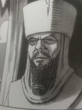

Hammurabi
 De: La Frikipedia, la enciclopedia extremadamente seria.
De: La Frikipedia, la enciclopedia extremadamente seria.
| De la serie gobernantes de ayer y de hoy:
|
| Hammurabi
|
| 
|
| Hamurabi echando rayos láser por la bocabuzón
|
|
| Nacimiento
|
NOEMEACVERDO a. C.
|
| Muerte
|
14 de julio del 69 d.d (Difunto el Diego)
|
| Cargo
|
Rey del imperio de Babilonia
|
| Ideología
|
Ojo por ojo y diente por diente
|
| Nacionalidad
|
Irak
|
| Cónyuge
|
Aria Giovanni
|
| Dinastía
|
Dinastía Hanukhá
|
| Notas
|
Le visitaba Baal cada vez que no se le subía la pirola
|
Hammurabi fue un machoman que habitó y poseyó Babilonia (Irak) en el NOEMEACVERDO a. C. Actualmente se le recuerda por las novelas eróticoesotéricas que escribió bajo el seudónimo de Gaelen Foley.
Biografía
Juventú
Hammurabi naci√≥ ya con todos los gastos pagados porque era hijo del rey Ankh-Amorph II (cuyo nombre significa "Aquel que recibe en secreto a Baal") y le puso de nombre a su hijo el de "≈°Arr-at-im-PPaRiS-√òíÄùíǵíåà ak", Hamurabi para los colegas y esclavos que le serv√≠an.
Pronto al niño se le subió el santo al cielo y quiso ser más que su padre, pero en vez de darle un golpe de estado comenzó poniendo en TVE a personas de su confianza para que emitiesen programas de manipulación mental y series donde siempre los protagonistas viejos cedían el sillón a los jóvenes, así tras emitir 345 mil veces Verano Azul a su padre, Hammurabi consiguió que su viejo abdicase del trono y así se hizo rey.
Para que ningún nostálgico del régimen anterior conspirase contra él inició un programa de obras públicas y así repartirse el erario público entre sus amigos y empresario afines, al mismo tiempo que contentaba a la opinión pública dándole migajas de esas que tu echas a las palomas para que no te caguen encima. Pero el país vecino le atacó pensando que como era un rey niño era un blandengue. ¡Nada más lejos de la realidad! Hammurabi se subió a su carro de guerra tirado por onagros salvajes y se fue con Mambrú a la guerra contra los asirios. Perpetrando masacres en todas las batallas el muy loco no paró de matar hasta llegar a Palestina donde Jesús de Nazaret le detuvo gracias a su ataque de bolas de fuego Khame-Ah.
Postadolescencia
Hammurabi regresó a su reino encontrándose con que era un imperio, así que se volcó en las labores diarias de cualquier emperador:
- Levantarse bien temprano para limpiar bien todas las calles de la capital imperial, ¡que se note que es una capital imperial, coño!
- Desayunar frokies de Kellog's con Coca-Cola para una vida activa y partir hacia el norte a vigilar que los asirios no hayan violado las fronteras y anden por ahí matando y violando súbditos propios.
- Subir al zigurat más alto y ponerse a cantar en voz en grito los éxitos de Metallica y María Callas, para que los creyentes sepan que es hora de rezar a Baal y prepararse para el coito matrimonial.
- Pegarse seis chupitazos de Red Bull con vodka para visitar a la hembra real y así poder engendrar muchos hijos, o sea, futuros reyecitos que se pelearán entre sí por la herencia de papi en el futuro.
- Mirar que los ríos Tigris y Éufrates no han desbordado y dar un par de latigazos a los encargados del canal para ver si acaban las obras para el plazo prometido.
- Visitar los numerosos rebaños de Babilonia y comprobar que los pastores y cowboys no han birlado ninguna oveja, a la vez tratar de descubrir si los centauros que se pasean cerca de allí no tienen parecido con los pastores.
- Inspeccionar los silos de trigo, cebada y arroz para ver si los Astarot, Nyarlathotep etc., etc. y etc no han mangado nada para luego jugar en bolsa.
- Regresar a palacio y pasarle un poco el polvo, fregar la ducha una vez al mes, limpiar el retrete cada cuatro días y que las caballerías reales estén listas para salir a uña de caballo a la mínima señal de alarma.
- Echarse a dormir, y en sueños recibir instrucciones del dios Shamash para el día siguiente y tomar buena nota de ello, sino el dios se enfadará y cerrará el grifo de los dólare y destruirá muchas cosechas de trigo, habrá inundaciones, vendrán los fachas a dar golpes de estado y la amante real puede que se vaya de la lengua y emita varios vídeos comprometedores...
Madurez y cénit
El tiempo fue pasando y el cansado Hammurabi veía que se le acababa el tiempo y aún no había hecho nada digno de mención en las crónicas y canciones pop, así que se metió a escritor. Tras ver lo bien que le iba a César Vidal con su ejército de negros, él también secuestró varios escribas sumerios y los puso a trabajar sobre argumentos apenas esbozados y con títulos rocambolescos bajo el seudónimo de Gaelen Foley:
- El club Inferno: al principio iba de que si James Bond viajaba al pasado para matar a Napoleón pero gracias a los escribas sumerios resultó en un club de gays aristócratas ingleses que peleaban contra la revolución francesa para poder seguir viviendo con sus privilegios de casta.
- La Familia Knight: una suerte de comedia de situación con tintes edípicos donde sale a relucir la conducta sádico-anal de sus autores en la sombra.
- Esposas reales: Hammurabi vuelve cargar las tintas con el sadomasoquismo y el LSD, todo mezclado con un portero ex-yonki que dice ver cincuenta sombras de Grey (¡¿y éste quién es?!). Se cree que este personaje fue metido por un escriba sumerio que quería huir del cautiverio al que estaba sometido y por eso metió a un sujeto drogodependiente y alineado, pero nadie supo descifrarlo hasta tres mil años más tarde.
- Las damas de honor reales: regresan las aventuras del portero enganchado al LSD, esta vez ya no ve sombras pero consigue ligarse a las 565 damas de honor del príncipe hurrita Sam-Hu.Ke les Din y luego contarlo en un blog, gracias al cual es identificado por la policía imperial hurrita que le persigue.
- ¿El siguiente por favor?: el yonki del LSD consigue huir al futuro pero justo coincide en el cuerpo de Sadam Hussein y así acaba la trilogía, ya se sabe, humor babilónico...
- La trilogía de la Ascensión: son tres libracos llenos de clichés sobre el mundo mediterráneo: noches de luna llena en las ruinas de Atenas, la pasión de Sicilia, el glamour de Mónaco, los sacrificios de niños a Moloch, corrupción gubernamental, pasotismo ciudadano, las discotecas de Ibiza, guerras civiles... todo ello en los libros: La Princesa Pirata (una pirata lesbiana que viaja de Suecia al Sur para conocer a Berlusconi y ver si la convierte en hetero), Princesas (no consigue ver a Berlusconi pero sí a Paris Hilton que la mete en su show de MTV) y El Príncipe Azul (Felipe VI de España consigue salvarla y la casa con su padre viudo).
Tras tanto quehacer literario Hammurabi se encontraba de mal humor. Nadie le tomaba en serio, tuvo que volver pelearse con los asirios, los hurritas, los judíos sionistas, los egipcios, los pastunes, los arios, los suevos, los cántabros, los aztecas, mapuches y sioux. Con tanto enemigo Hammurabi reunió a sus científicos y juntos crearon la bomba atómica (cuyos planos conserva Iker Jiménez y otros piramidiotas) con la que ganó la Primerísisisisisma Guerra Mundial.
El código de Hammurabi
Tras la victoria final Hammurabi regresó a su hogar en su Hummer y por el camino se le aparecieron Alá y Baal(únicos dioses verdaderos) que, según Hammurabi, le fueron dictando los puntos de un nuevo código de leyes para su pueblo:
- Todo el mundo es inocente hasta que se pruebe lo contrario.
- No verás pron antes de los catorce años.
- Matarás diez pollos de un hachazo.
- Hay tres tipo de clases sociales: los ricos, los trabajadores y los esclavos.
- Las tarifas varían según a quién se le ofrece los servicios: si eres feo, gordo y viejo ¡las putas te salen gratis!
- Si la casa que te han hecho se te cae encima y muere tu familia, lo mismo le pasará a la del arquitecto y albañiles que la hicieron.
- Se establece la Ley del Talión para trifulcas y agresiones entre partes ofendidas: ojo por ojo y diente por diente. Esto hizo que aumentaran los ciegos y desdentados para regocijo de los vecinos.
- Los esclavos tienen derecho a un día libre y a putas gratis y sin ETS.
- Te puedes divorciar, mira que luego va a venir Dios y el Vaticano y lo prohíben.
- Si tu vecino no te paga las deudas lo puedes esclavizar durante tres años (los judíos te ponían cuatro años y un día).
- Si tu mujer te pone los cuernos con el vecino puedes tú también acostarte con el vecino (¿¿¿??? !!!! ¿¿¿WTF???)
- Si tu perro es peligroso y se te ha dicho más de una vez que lo emboces y no lo has hecho y el animal mata a alguien pagarás media tonelada de plata y se ejecutará al perro, y a ti, por gilipollas.
- Si compras cosas robadas te cortan la cabeza (del pene).
- Si ayudas a escapar a un esclavo te convierten en fantasma.
- Si te acuestas con tu madre te mandan a Portugal; si el padre se folla a su hija se le destierra a la Antártida (sin abrigo).
- Si eres de clase baja y lastimas a uno de clase superior te cortan en pedacitos; en cambio si eres de clase superior y lastimas a uno de clase inferior te felicitan.
Hammurabi no llegó a Babilonia vivo, murió por culpa de quedarse sin gasolina para su Hummer en medio del desierto. Su código de leyes se encontró escrito en cuneiforme (o sea, letra de médico) en la guantera al lado de una botella de agua Evian. Sus hijos promulgaron dichas leyes y las pusieron por escrito en varias ciudades, escritas en penes de piedra para que todo el mundo se acercase a ver que carallo era "eso".
Frikipedia 2005-2016, Licencia
GFDL 1.2 - Extraído por FrikiLeaks